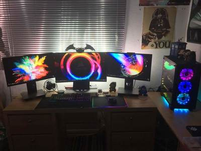
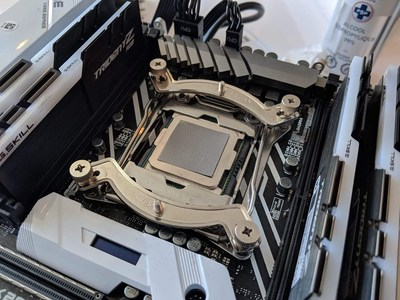

What we do
Since 2010 we have been providing Cleveland Ohio with custom computer builds and repairs. We build custom computers that stand out from the pre built competition.
Why us
We are locally owned and operated and specialize on Windows and Apple computers. If you're unsatusafied with our service we will fix it until it's right.
Buyers should expect their computer to ship in 2-3 business days (excluding holidays and weekends).
Repairs can take 5 days maximum depending on the issue and how busy we are.